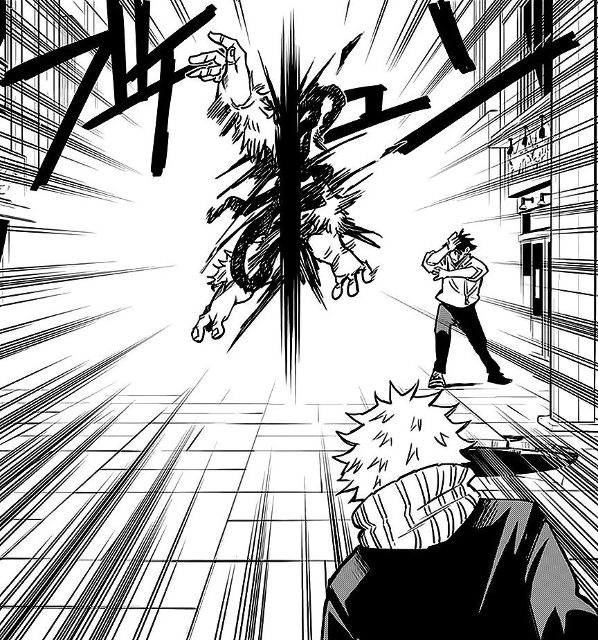
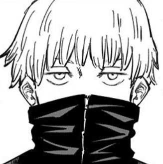
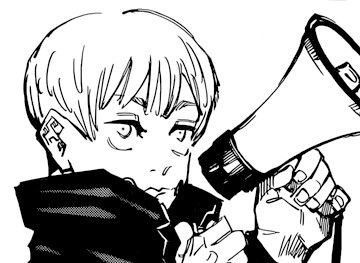
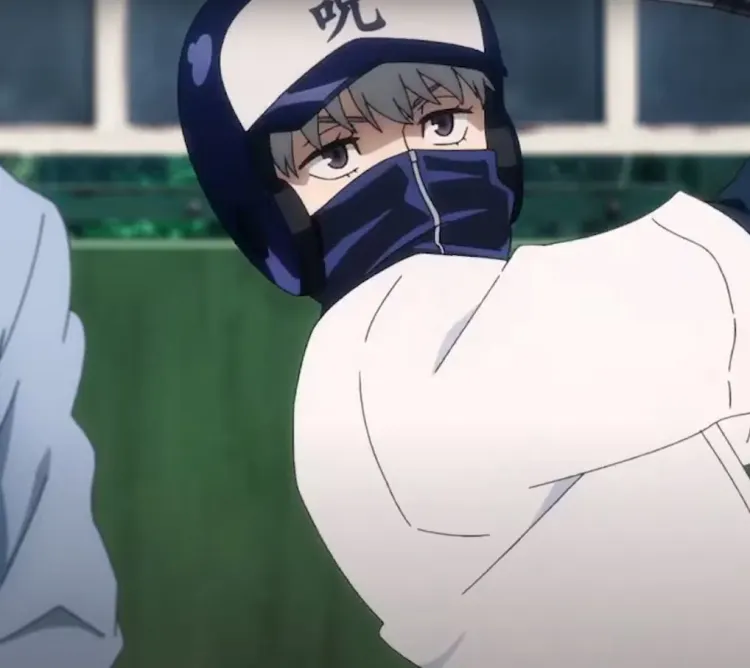
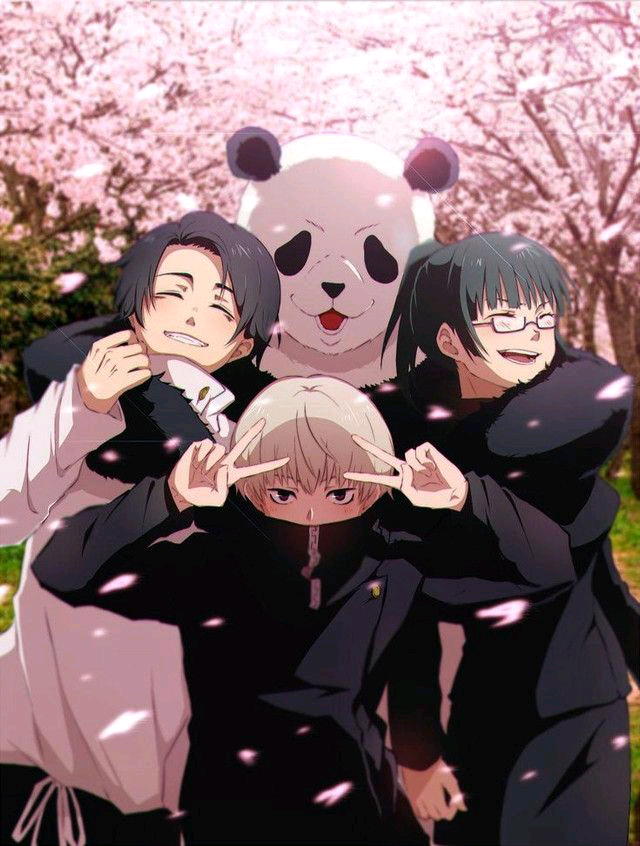
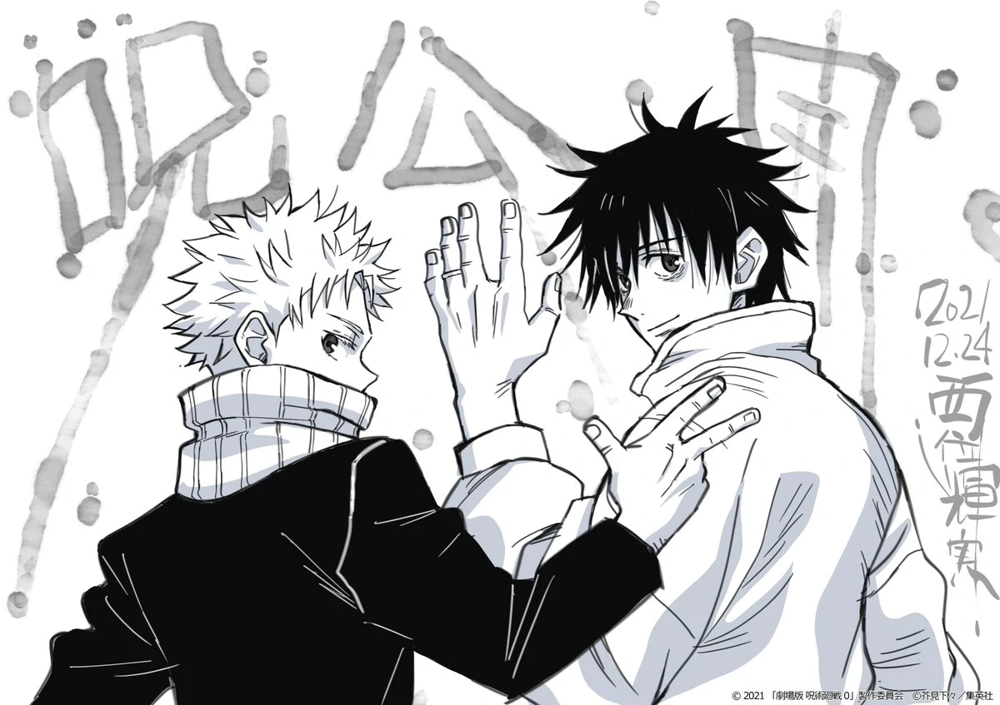

Toge Inumaki (狗巻棘 Inumaki Toge?) es uno de los personajes de la
serie manga Tokyo Metropolitan Curse Technical School y su serie
secuela, Jujutsu Kaisen. Es un estudiante de segundo año del
Colegio Técnico de Magia Metropolitana de Tokio y miembro del
Clan Inumaki.
Apariencia
Apariencia de Inumaki
Toge es un joven delgado y de baja estatura. En el manga, su
cabello y sus ojos son de un color marrón claro, mientras que en
el anime, su cabello es cambiado a uno color blanco y ojos color
morado. Posee cejas finas y en ambos costados de su boca lleva
dos círculos con puntos y uno en la lengua representando el
sello maldito del Clan Inumaki. Tras los eventos ocurridos
durante el Arco de El Incidente de Shibuya, perdió parte de su
brazo izquierdo, al verse atrapado en la expansión territorial
de Sukuna.
Su vestimenta característica consiste en su propia versión del
uniforme del Colegio Técnico de Magia Metropolitana de Tokio,
que consiste en una chaqueta negra en el manga y azul marino en
el anime de cuello alto con cremallera que se extiende hasta
cubrir su boca, usa pantalones negros y en sus pies, lleva
zapatos blancos. En su primer año, llevaba un cuello marrón
claro y zapatos negros. En el anime, su uniforme completo es
representado en color azul marino. En ciertas ocasiones, lleva
consigo un megáfono blanco para evitar gritar y dañar aún más su
garganta.
Personalidad
Inumaki de normal
Durante Tokyo Metropolitan Curse Technical School, solía ser
alguien bastante tranquilo y reservado. Le gustaba pasar el
tiempo solo y dedicarlo a cosas a las que no le provocaría daño
algun. Se cree que esto era para no maldecir a sus compañeros
por error, o simplemente por miedo a lastimarlos.
Sí bien, Inumaki suele ser mal entendido por aquellos que no lo
conocen, es un joven bastante amable, cariñoso y tiene la
costumbre de hacer bromas. Cómo cualquier adolecente normal,
aunque no lo sea. Debido a que es usuario de la Técnica de
Discurso Maldito, su vocabulario se basa en ingredientes de
onigiri, esto con el propósito de no maldecir a otros por error.
Habilidades
Habilidad
Descripción
Imagen
Explota
Al momento de que Toge articule la palabra, su
objetivo se ve obligado a explotar violentamente
dando como resultado que muera en el proceso.
Torcer
Cuando se articula la palabra, alguna parte del
cuerpo de su objetivo comienza a girar
rápidamente hasta el punto de desfigurarse por
completo.
Sé Aplastado
Cuando se articula la palabra, alguna parte del
cuerpo de su objetivo comienza a girar
rápidamente hasta el punto de desfigurarse por
completo.

Húndete
Al momento de articular la palabra, en la cabeza
de su objetivo comienza a formarse un tipo de
campo de gravedad intensamente pesada que lo
forza a irse hacia abajo con fuerza para crear
un agujero profundo en el suelo y termine
aplastado.
No te Muevas
Permite que su objetivo quede inmovilizado por
un breve período de tiempo
Detente
Cumple la misma función que No te Muevas, es
decir, detiene a su objetivo durante un breve
período de tiempo. Sin embargo, suele ser
aplicada sobre las técnicas de un enemigo.
Duérmete
Al momento de que Toge articule la palabra, su
objetivo se ve obligado a caer en un sueño
profundo.
Regresa
Al momento de articular la palabra, es capaz de
disipar o enviar de regreso a un Shikigami con
su dueño. Se desconoce que tipo de efectos tiene
sobre humanos.
Huye
Al momento de articular la palabra, su objetivo
se ve forzado a salir corriendo. Toge es capaz
de utilizarla sobre varios objetivos a la vez.
Dispara
Toge acumula una gran cantidad de energía
maldita y al momento de articular la palabra, su
objetivo sale disparado varios metros lejos de
él.
Imagenes de Inumaki
Diseño de Inumaki (Anime)

Diseño de Inumaki (Manga)

Inumaki con su megafono

Inumaki jugando al béisbol

Inumaki y su equipo

Inumaki con Yuta
Curiosidades
Según información revelada en el Volumen 05 del
manga:
El estilo de cabello de Inumaki era demasiado
similar al de Yuji Itadori, así que al final
decidieron cambiarlo y ahora luce similar al
estilo de Satoru Gojo.
Es de baja estatura.
A pesar de no lucir como Maki Zenin o Yuji
Itadori, es extremadamente atlético.
Le gusta hacer bromas.
Su ingrediente favorito de onigiri es Tuna-Mayo
(atún con mayonesa)
Gracias a la habilidad de maldecir de Inumaki,
Los estudiantes de Tokyo y Kioto le tienen una
gran estima, ¿O miedo?
Inumaki suele unirse a las bromas de Gojo, como
podemos ver en los post creditos del anime,
cuando está utilizando una falda al igual que
Gojo.
Las marcas que tiene en los costados de la boca
y lengua simulan los ojos y boca de una
serpiente, que es la marca del discurso maldito.
Según información revelada en el Jujutsu Kaisen Official
Fanbook:
Tiene 17 años.
Su fecha de cumpleaños es el 23 de octubre.
Su año de nacimiento es 2001, considerando que
los sucesos de Jujutsu kaisen 1 ocurren en 2018.
Es un chamán de cuasi-primer grado.
Su modo de inscripción al Colegio de Tokio fue
por su línea de sangre.
Su técnica es la Técnica de Discurso Maldito.
Su pasatiempo es Youtube.
Su comida favorita es el Onigiri de Atún con
Mayonesa (Tuna-Mayo).
La comida que no le gusta son los huevos de
pescado.
Su causa de estrés son las reuniones que se
realizan durante la mañana en el colegio.
Información revelada de la entrevista con Gege
Akutami:
Toge comenzó a hablar con ingredientes
de onigiri desde que tiene consciencia.
Akutami dijo que es casi como si fuera
bilingüe.
Es el único miembro conocido del clan
Inumaki.
Toge habla con ingredientes de Onigiri
para no dañar a otros accidentalmente.
Después de que lo que ocurrió en el
Volumen 00, Toge siempre lleva una
medicina para la garganta de repuesto.
Akutami afirmó que cambió el estilo de
cabello de Toge para evitar que luzca
como Yuji Itadori, y que supone que por
eso ahora es considerado un chico
atractivo.
Según Akutami, las personas del Clan
Inumaki que poseen la Técnica de
Discurso Maldito, se comunican entre
ellas por medio de sus corazones.
El uniforme de Toge está modificado con
el el cuello alto, cubriendo con el fin
de reducir al mínimo el volumen de su
voz.
El Clan Inumaki es el único clan en el
mundo que posee la Técnica de Discurso
Maldito.
Es el que más habla del grupo,
simplemente siendo superado por Panda
Debido a sus habilidades, Toge cuenta con un
vocabulario limitado compuesto por ingredientes
de onigiris, estás son algunas de Las Palabras
Seguras de Toge:
Salmón (しゃけ Shake?): utilizado para
afirmar.
Atún (Picado de Katsuobushi) (おかか
Okaka): utilizado para negat.
Hueva de Abadejo (明太子 Mentaiko)
Thunini (ツナツナ Tsuna Tsuna)
Atún con Mayonesa (ツナマヨ Tsuna-Mayo)
Huevos del Salmón (すじこ Sujiko)
Alga (こんぶ Konbu)
Mostaza (高菜 Takana): utilizado para
preguntar "¿Estás bien?"
Fuera de esas palabras, lo demás que
dice son cosas sin sentido
El diseño de personaje de Toge para Jujutsu
Kaisen 0: The Movie fue rediseñado con
supervisión de Gege Akutami, por lo que su
peinado tuvo un gran cambio a los dibujados en
el Volumen 00.